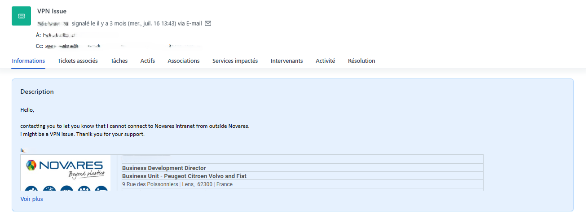
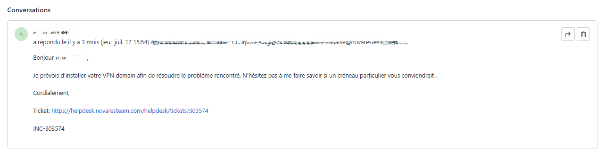
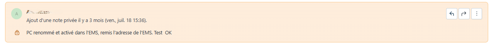

📋 Contexte de la procédure
Cette procédure définit les processus de traitement des tickets via Freshdesk et les règles de respect des SLA (Service Level Agreement) pour garantir un support IT réactif et de qualité chez Novares.
⏱️ Niveaux de Priorité et SLA
🔴 CRITIQUE
Temps de première réponse
🟠 ÉLEVÉ
Temps de première réponse
🟡 MOYEN
Temps de première réponse
🟢 FAIBLE
Temps de première réponse
⚙️ Procédure de traitement
Réception et qualification du ticket
Réception d'un nouveau ticket dans Freshdesk, et sa qualification immédiate.

Attribution de la priorité et du SLA
Chaque niveau de priorité est approprié selon les critères établis.
Critères de priorisation :
Première réponse et accusé de réception
Envoyer une première réponse dans le délai SLA pour accuser réception et informer l'utilisateur.

- Accusé de réception de la demande
- Demandes d'informations complémentaires si nécessaire
- Référence du ticket pour suivi
Points de contrôle :
✅ Réponse envoyée dans le délai SLA✅ Langage clair et professionnel
✅ Informations complètes demandées
✅ Délai de résolution communiqué
Diagnostic et investigation
Analyser le problème en profondeur et identifier la cause racine.
Résolution et mise en œuvre
Appliquer la solution identifiée et vérifier son efficacité.

Étapes de résolution :
Communication et mises à jour régulières
Maintenir l'utilisateur informé de l'avancement, particulièrement pour les tickets de haute priorité.
Fréquence des mises à jour :
🔴 CRITIQUE : Toutes les heures🟠 ÉLEVÉ : Toutes les 2-4 heures
🟡 MOYEN : Une fois par jour
🟢 FAIBLE : Tous les 2 jours
Clôture et suivi qualité
Clôturer le ticket correctement et collecter le retour utilisateur.
Analyse et amélioration continue
Enrichir la base de connaissances et identifier les opportunités d'amélioration.
Actions post-résolution :
✅ Création/Mise à jour KB si pertinent✅ Signalement de bug si applicable
✅ Suggestion d'amélioration processus
✅ Retour d'expérience en équipe